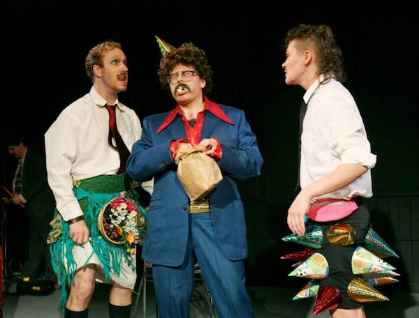

/// Tribute to John Borek, MuCCC Artistic Director /// Our community theater years/// |
John Borek was a father figure for any and all weirdo theater. I met him while tabling at a community art sale. He immediately recognized my wands and creatures with so much excitement (a rare response). He bought a wand to gift to his recently engaged friends, if they appreciated it. He whisked off and soon reported back enthusiastically that they didn't 'get it', so he got to keep it. Not much longer in the conversation it was revealed that he was the Artistic Director at a local black box theater and I was in an undefinable performing duo. It was kismet. |
John of course had his own performance career, bending the genre (and his open access to a theater) to stage a countless number of challenges to the notion of what we think of as entertainment. Many were anchored on some angle of curiosity in his own offbeat personality, and many were done with the spirit of a gregarious ringmaster, inventing ways to invite as many friends to take part in his productions as he could conceive. His was the spirit of generosity. He was playful to the extreme, and was passionate in his pursuit for unscripted chaos in the theatrical moment. |
|  | I was honored and delighted to be asked by John to direct a special piece for his 60th birthday celebration. He planned to revive a play that had really woken him up as a grade school student in the early 60s: If Boys Wore the Skirts. A high school troupe would do a straight revival of the original, and John gave us carte blanche to interpret at will. Our version re-staged the play, just viewed, as the fever dream of drag personality extraordinaire Maurice. Please click here to view the full lookbook of the most absurd and delightful theater I could imagine. |
Santanalia was the first large cast show we staged at MuCCC. It had been gaining in scale and scope for two years. We adjusted our vision for the opportunity and expanded the Santanalia Pageant - a half hour large cast pantomime to rhyming couplets and live music - to include a hosted talent show and variety entertainment cheer theater introducting our new holiday socialist lore fantasy. Santanalia is a beloved memory for all who see it and truly worth reviving. We miss it too. Please click here to see our memory books of this darling play. |
I also had the privilege of breaking the news to John in one of our coffeeshop conversations that the world was supposed to end in 2012. He was immediately delighted. It was still 2011 but he couldn't wait (what if the world ended?) and immediately set to arranging an evening of short plays with apocalypse themes. Imbedded in the middle of a dozen arch and terse human dramas was our Bloody Noes spectacular staging of the actual and real Book of Revelation. We did it twice, 2011 & 2012, two different casts, please click here for Annette Dragon's perfect photographs of both events. |
Metal Quest was the large-scale dream opera of Jeffrey Askins. Heretofore a shape-shifting solo musician, this was Jeff's first opportunity to compose a drama, direct a cast, stage a play etc. Nine or ten of us helped hammer pantomime stagecraft into his vision of the lifespan of an ancient Chinese emperor addicted to metal, and Jeff played shred guitar. Theater at its most avantgarde. See more here. |
Thank you John |